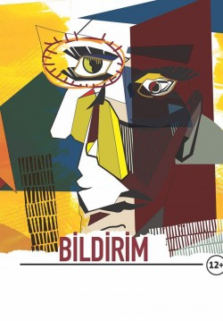
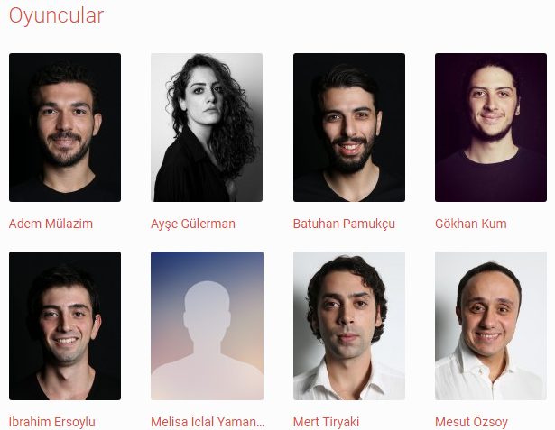

Tiyatro Katılım

Tür , Süre , Kaç Perde
Komedi , 105 Dakika , 1 Perde
Gösterim Tarihi
07.11.2018
Adres
Nilüfer Belediyesi Kent Tiyatrosu
Bir devlet dairesinin müdürü olan Josef Gross'a çok önemli bir resmi bildirim gelir.
Ancak bu bildirim Gross'un bilmediği Pitidapca diye bir dilde yazılmıştır.
Gross, elindeki bildirimin içeriğini anlamaya çalışırken, Pitidapca'nın çoktan tüm büroya yayılmış olduğunu fark eder.
Hatta gelen bildirimlerin çevrilmesi kendi yetkisi olmaksızın bir çeviri ofisi bile kurulmuştur.
, bir yandan arkasından dönen işlerin gibir yandan da kendisine gelen bildirimde ne yazdığını merak etmektedir.

Tiyatro ve Katılım
Tiyatro ve katılım kısmından tiyatro etkniliklerine katılabilirVe Tiyatro bilgilerine erişebilirsiniz
Sinema ve Katılım
Sinema ve Katılım kısmından Film bilgilerini Film içeriğine Ve Fragmana erişebilirsiniz ve katılabilirsiniz
Sosyal Medya Hesaplarımız'dan bizi takip edebilirsiniz